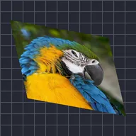

ยืดตามแกน

ยืดเลเยอร์ออกได้ทุกทิศทาง
การตั้งค่า
| การตั้งค่า | ประเภท | ช่วงค่า | ค่าเริ่มต้น |
|---|---|---|---|
| ขนาด | ตัวเลข | 0.01 ถึง 50 | 1 |
| มุม | มุม | -3600° ถึง 3600° | 0° |
| มาสก์ตามเลเยอร์ | เปิดหรือปิด | – | ปิด |

ยืดเลเยอร์ออกได้ทุกทิศทาง
| การตั้งค่า | ประเภท | ช่วงค่า | ค่าเริ่มต้น |
|---|---|---|---|
| ขนาด | ตัวเลข | 0.01 ถึง 50 | 1 |
| มุม | มุม | -3600° ถึง 3600° | 0° |
| มาสก์ตามเลเยอร์ | เปิดหรือปิด | – | ปิด |